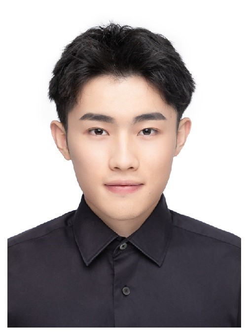
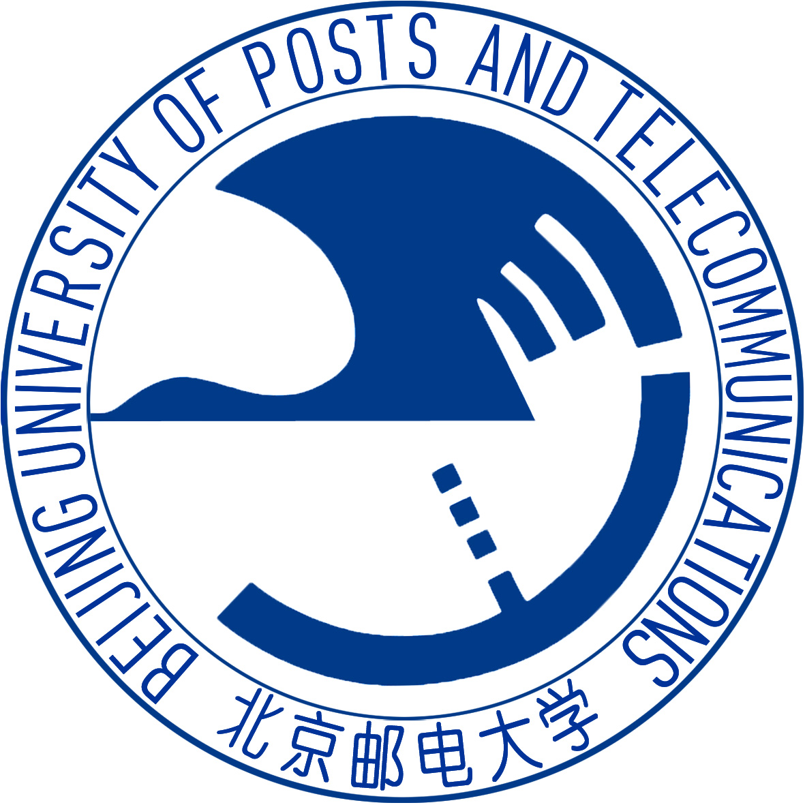

|  | Master student |
I am currently pursuing my master's degree at Beijing University of Posts and Telecommunications under the supervision of Prof. Lin Zhang. I received my bachelor's degree from the School of Information and Communication Engineering, Beijing University of Posts and Telecommunications(BUPT) in June 2021.
My research interests include: deep reinforcement learning, intelligent transportation, autonomous driving, and autonomous parking.
|  | M. S., Beijing University of Posts and Telecommunications (BUPT), Haidian District, Beijing [2021.9 ~ ]
|
B. Sc, South-Central University for Nationalities, Wuhan, Hubei [2015.9 ~ 2019.7]
|
T3OMVP: A Transformer-Based Time and Team Reinforcement Learning Scheme for Observation-Constrained Multi-Vehicle Pursuit in Urban Area
Zheng Yuan,Tianhao Wu,Qinwen Wang,Yiying Yang,Lei Li and Lin Zhang
Electronics, 2022.[PDF]
Confidence estimation transformer for long-term renewable energy forecasting in reinforcement learning-based power grid dispatching
Xinhang Li, Nan Yang, Zihao Li, Yupeng Huang, Zheng Yuan>, Xuri Song, Lei Li and Lin Zhang
CSEE Journal of Power and Energy Systems.
A Traffic-Aware Federated Imitation Learning Framework for Motion Control at Unsignalized Intersections with Internet of Vehicles
Tianhao Wu, Mingzhi Jiang, Yinhui Han, Zheng Yuan,Xinhang Li andLin Zhang
Electronics, 2021.
DP-YOLOv5: Computer Vision-Based Risk Behavior Detection in Power Grids
Zhe Wang, Yubo Zheng, Xinhang Li, Xikang Jiang, Zheng Yuan, Lei Li, Lin Zhang
Chinese Conference on Pattern Recognition and Computer Vision (PRCV), 2021.
Beijing Momenta Planning and Control Algorithm Internship(PNC) （2023.2-now）
For the need of detecting the success rate of algorithms in autonomous driving simulation test tasks, we use a rule-based and machine-learning based approach to detect the number of accidents in simulation test tasks, and through detecting the success rate we can iterate the autonomous driving planning algorithm.
In addition, we use Python to complete the simulation evaluation data analysis, interface with the front-end, and visualize the simulation evaluation information.
Jinan (Beijing University of Posts and Telecommunications) Industrial Internet Research Institute (Intelligent Transportation System + Artificial Intelligence)
Participated in a research project on optimisation of unsignalised vehicle movements in an urban environment, using the deep reinforcement learning method MADDPG to optimise vehicle movement models for single and multiple intersections, building a virtual simulation environment for multiple intersections and lanes using python
Design and implementation of deep reinforcement learning-based unmanned simulation of testing system
Based on Carla autonomous driving virtual simulation system, we design vehicle path planning and control algorithms, use A*-based global path planning algorithm and Bessel curve-based local path planning method to realize path planning, use PID and MPC algorithm to realize vehicle control.
And on the basis of the design of the deep reinforcement learning method based on DDPG to achieve vehicle steering wheel control, and finally can achieve safe driving under urban traffic.